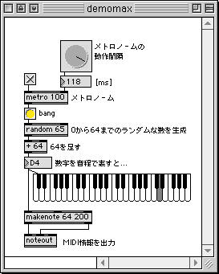
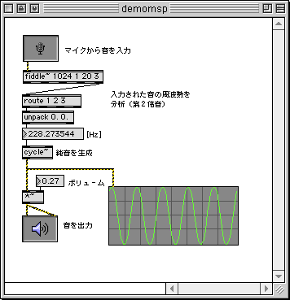
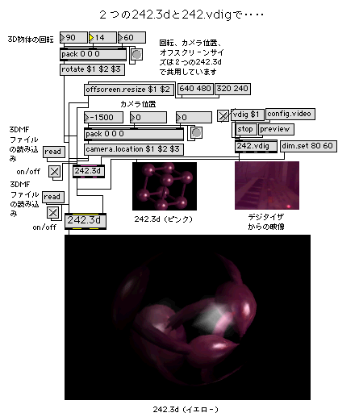

Kyushu Institute of Design Max Seminar Presents
t o p/テーマ/日程/プロフィール/参加募集/f
a q/リンク
Q．Max？
| Maxというのは、ソフトウェアの名前です。MIDI (シンセサイザー間での情報のやりとりの規格) を中心としたプログラムをつくることができます。プログラムといってもとても簡単で、基本は、「オブジェクト」と呼ばれる、何かしらの機能を持った四角、 |
|
↑こんなのを自由にウィンドウ上に配置して、それらを線でつなぐことによってプログラムします。例えば、こんな感じです。 |
|
 |
|
みたら分かるのではないかと思いますが、オブジェクトの上の黒いところが入力で、下の黒いところが出力。いろんな機能をもったオブジェクトが用意されていて、それらを画面上でどんどん組み合わせていくことができます。MIDI信号の入力 / 出力のオブジェクトも豊富に用意されています。 これらを使って、例えば自分で考えた規則に従った自動音楽生成装置や、毎回結果が異なる、楽譜やCDのような固定された時間にとらわれない音楽をつくるプログラムなどなど、既存のシーケンサ・プログラムでは不可能なありとあらゆる実験が可能なのです。そして、Maxのプログラム(パッチと呼ばれています)は、とても視覚的に表されているので、思いついたらすぐに簡単に試すことができます。 Maxを使って音楽をつくるということは、音楽を作るためのツールを自分でつくる、ということです。なにか独創的なものをつくってみたい！という人にぴったりのソフトウェアなのです。 Maxは基本的にMIDIを中心に扱うので、結果として出てくる音は、Maxに接続されるシンセサイザなどによります。Maxが出力しているのは基本的に音程や音量などの情報で、出てくる音響よりも音楽としての構造に着目している、といえるでしょう。 |
Q．MSPは？
|
これは、Max用のエクスターナル・オブジェクト集。つまり、オプションで買えるオブジェクト（あの四角形）集です。これを加えると、直接、音を操作することが可能になります。つまり、自分でシンセサイザやエフェクタを組み立てることができるようなものです。マイクから音を取り込み、それをさまざまに加工してスピーカから出力してみる、というようなことができるのです。ちょっと画面を見てみると、 |
 |
|
マイクやスピーカの絵が見えると思いますが、それにつながっている黄色い線から音が出たり入ったりしているのです。もちろんMaxと共存できます。ちなみにオブジェクトの名前の最後に”~”がついているのがMSPのオブジェクトですね。もうここまでくると、サンプラ、ボコーダ、ミキサー、などなど、不可能なモノはありません。理論的には。 現実には、コンピュータのパワー次第。そして、パッチを作る人間の能力次第です。 MSPはFFT (高速フーリエ変換) なども可能で、かなり強力なDSP (ディジタル信号処理) 環境です。そしてこれらを Max を介して音楽的なアイデアと融合させることができるのです。 |
Q．では、natoとは？
|
MSPと同じく、Max用のオブジェクト集です。これは、Maxで映像を生成することを可能にします。さらに、ネットワーク関連の機能を持ったオブジェクトもあります。nato.は、ビデオミキサも可能であり、ビデオエフェクタも制作可能であり、もうかなりすごいのですが、なにせ私は持っていませんので、natoを持っておられる方から画像を拝借してきました。 |
 |
|
このような映像処理が、MaxやMSPと共存した形で実現可能です。すごい。言い忘れていましたが、MaxもMSPもnatoも、すべてリアルタイムで動作するんですよ。 この写真を提供していただいた斎藤さんのサイトは、MSPとnatoについてのすばらしいチュートリアルになっています。興味を持たれた方はぜひ、Saito Music Lab.でゆっくり堪能してください。 文責 堀尾 寛太
|
P.S.
以上三点については他のところで書いた文章があるので，そちらも読んでみてください。 （城）